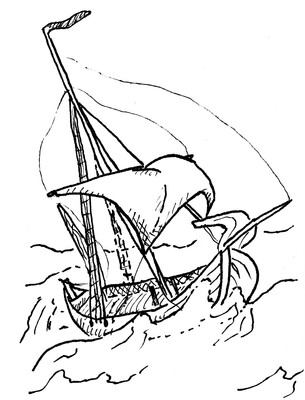

103 Skye Boat Song
transpose
font size
After defeat at the Battle of Colloden, Bonnie Prince Charles fled, disguised as a maid, to the Isle of Skye.
This song was written by Sir Harold Boulton in the 19ᵗʰ century, and set to a Scots Gaelic rowing song.
[C]Speed bonnie [Am]boat, like a [Dm]bird on the [G]wing,
[C]Onward, the [F]sailors [C]cry, [G]
[C]Carry the [Am]lad that’s [Dm]born to be [G]king
[C]Over the [F]sea to [C]Skye.
[Am]Loud the winds howl, [Dm]loud the waves roar,
[Am]Thunderclaps [F]rend the [Am]air.
[Am]Baffled our foes [Dm]stand by the shore,
[Am]Follow they [F]will not [Am]dare. [G]
[C]Speed bonnie [Am]boat, like a [Dm]bird on the [G]wing,
[C]Onward, the [F]sailors [C]cry, [G]
[C]Carry the [Am]lad that’s [Dm]born to be [G]king
[C]Over the [F]sea to [C]Skye.
[Am]Though the waves leap, [Dm]soft shall ye sleep,
[Am]Ocean’s a [F]royal [Am]bed.
[Am]Rocked in the deep, [Dm]Flora will keep
[Am]Watch by your [F]weary [Am]head. [G]
[C]Speed bonnie [Am]boat, like a [Dm]bird on the [G]wing,
[C]Onward, the [F]sailors [C]cry, [G]
[C]Carry the [Am]lad that’s [Dm]born to be [G]king
[C]Over the [F]sea to [C]Skye.
[Am]Many’s the lad, [Dm]fought on that day,
[Am]Well the clay[F]more could [Am]wield,
[Am]When the night came, [Dm]silently lay
[Am]Dead on Cul[F]loden’s [Am]field. [G]
[C]Speed bonnie [Am]boat, like a [Dm]bird on the [G]wing,
[C]Onward, the [F]sailors [C]cry, [G]
[C]Carry the [Am]lad that’s [Dm]born to be [G]king
[C]Over the [F]sea to [C]Skye.
[Am]Burnt are our homes, [Dm]exile and death
[Am]Scatter the [F]loyal [Am]men;
[Am]Yet e’er the sword [Dm]cool in the sheath
[Am]Charlie will [F]come ag[Am]ain. [G]
[C]Speed bonnie [Am]boat, like a [Dm]bird on the [G]wing,
[C]Onward, the [F]sailors [C]cry, [G]
[C]Carry the [Am]lad that’s [Dm]born to be [G]king
[C]Over the [F]sea to [C]Skye.
- claymore
- a Scottish two-handed sword